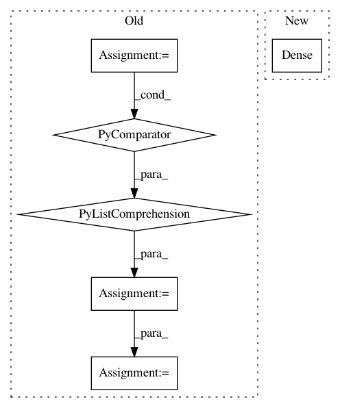

b0cd6a1df09c7157dea48265a5c21c3b7cc37399,softlearning/misc/nn.py,,feedforward_model,#Any#Any#Any#Any#Any#Any#,4
Before Change
" shapes as an input. It might be possible that you passed in a"
" list/tuple of dimension objects. Those should be accepted"
" but have not yet been implemented.")
inputs = [
tf.keras.layers.Input(shape=input_shape)
for input_shape in input_shapes
]
if len(inputs) > 1:
out = tf.keras.layers.Concatenate(axis=-1)(inputs)
else:
out = inputs[0]
for units in hidden_layer_sizes:
out = tf.keras.layers.Dense(
units, *args, activation=activation, **kwargs)(out)
out = tf.keras.layers.Dense(
output_size, *args, activation=output_activation, **kwargs)(out)
After Change
model.add(tf.keras.layers.Lambda(lambda x: tf.concat(x, axis=-1)))
for units in hidden_layer_sizes:
model.add(tf.keras.layers.Dense(
units, *args, activation=activation, **kwargs))
model.add(tf.keras.layers.Dense(
output_size, *args, activation=output_activation, **kwargs))
In pattern: SUPERPATTERN
Frequency: 3
Non-data size: 6
Instances
Project Name: rail-berkeley/softlearning
Commit Name: b0cd6a1df09c7157dea48265a5c21c3b7cc37399
Time: 2018-10-29
Author: hartikainen@berkeley.edu
File Name: softlearning/misc/nn.py
Class Name:
Method Name: feedforward_model
Project Name: deepchem/deepchem
Commit Name: de190ef8f5ed51aa288b877f8dda855a2d19b086
Time: 2017-04-09
Author: zqwu@stanford.edu
File Name: deepchem/molnet/run_benchmark_models.py
Class Name:
Method Name: benchmark_classification
Project Name: deepchem/deepchem
Commit Name: de190ef8f5ed51aa288b877f8dda855a2d19b086
Time: 2017-04-09
Author: zqwu@stanford.edu
File Name: deepchem/molnet/run_benchmark_models.py
Class Name:
Method Name: benchmark_regression